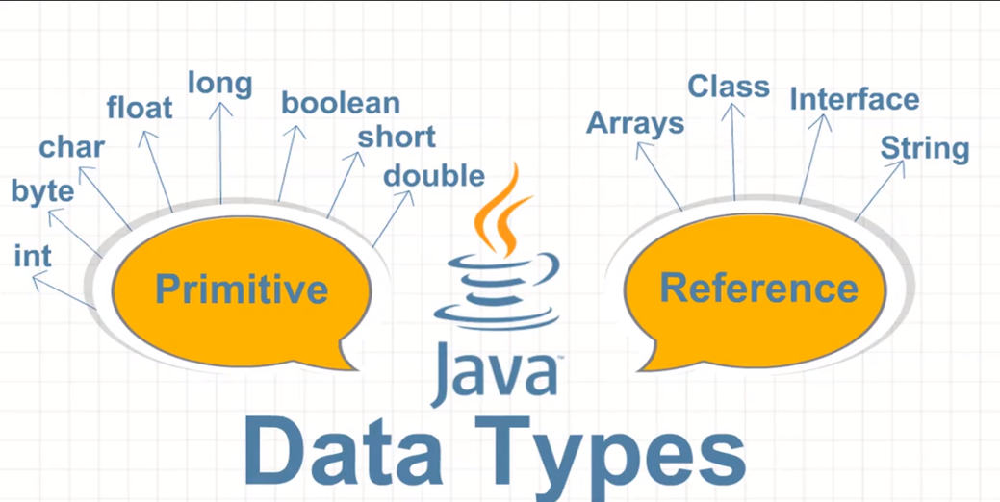

Променливи
Променливата в Java е мястото, където може да се съхранява стойността на даден тип данни. Това е именувана област в паметта на компютъра, която се използва за запазване на стойността на дадена променлива.
За да създадем променлива в Java, трябва да я декларираме с подходящия тип данни, след което да зададем стойността ѝ. Например, за да декларираме целочислена променлива с име "x" и да й зададем стойността 10, можем да напишем следното:
int x = 10;
>Тук типът на променливата е "int", което означава, че тя може да съхранява цели числа. "x" е името на променливата, което може да бъде избрано от програмиста, а 10 е стойността, която ще бъде запазена в променливата.
В Java съществуват различни типове данни за променливи, като например цели числа (int), числа с плаваща запетая (float, double), символи (char), булеви стойности (boolean) и други.
Типове данни
Определение за типове данни:
-Тип данни представлява съвкупност от стойности, които имат еднакви
характеристики.
Видове:
- Целочислени типове –byte, short, int, long ;
- Реални типове с плаваща запетая –float и double;
- Булев тип – boolean;
- Символен тип – char;
- Обектен тип – Object;
- Символни низове – String.
| Тип данни |
Стойност по подразбиране |
Минимална стойност |
Максимална стойност |
| byte |
0 |
-128 |
+127 |
| short |
0 |
-32768 |
+32767 |
| int |
0 |
-2147483648 |
+2147483647 |
| long |
0L |
-9223372036854775808 |
+9223372036854775807 |
| float |
0.0f |
-3.4Е+38 |
+3.4Е+38 |
| boolean |
false |
true |
false |
| char |
'\u0000' |
0 |
+65535 |
| Object |
null |
|
|
| String |
null |
|
|
Важно!
Типовете byte, short, int, long, float, double, boolean и char се наричат примитивни типове
данни, тъй като са
вградени в езика Java на най-ниско ниво.
Типовете Object и String са изписани с главна буква, тъй като са сложни типове (не са примитивни).
Те представляват класове, които са дефинирани чрез средствата на езика Java, а не са част от него самия, а са част
от стандартните библиотеки на Java.
1.Целочислени типове данни
Целочислените типове отразяват целите числа и биват – byte, short, int и long. Нека ги разгледаме един по един в
реда, в който ги изброихме.
Първи в нашия списък е целочисленият тип byte. Той е 8-битов знаков тип, което означава, че броят на възможните
стойности е 2 на степен 8, т.е. 256 възможни положителни и отрицателни стойности общо. Стойността по подразбиране е
числото 0. Минималната стойност, която заема, е -128, а максималната +127.
Вторият по ред в нашия списък е целочисленият тип short. Той е 16-битов знаков тип. В параграфа за типа byte по-горе
изяснихме какво означава знаков тип и какво значение отдава броят на битовите. Стойността по подразбиране е
числото 0. Минималната стойност, която заема е числото -32768, а максималната - +32767.
Следващият целочислен тип, който ще разгледаме е типът int. Той е 32- битов целочислен знаков тип. Както виждаме, с
нарастването на битовете нарастват и възможните стойности, които даден тип може да заема. Стойността по
подразбиране е числото 0. Минималната стойност, която заема е -2 147 483 648, а максималната +2 147 483 647.
Последният целочислен тип, който ни предстои да разгледаме, е типът long. Той е 64-битово цяло число със знак със
стойност по подразбиране 0L. Знакът L се указва, че числото е от тип long (иначе се подразбира int). Минималната
стойност, която типът long заема, е -9 223 372 036 854 775 808, а максималната +9 223 372 036 854 775 807.
2.Реални типове данни с плаваща запетая
Реалните типове данни с плаваща запетая в Java (floating-point types) се използват за съхраняване на числа с десетична запетая. Тези типове данни могат да бъдат представени с различен размер в битове, като в Java се използват два такива типа:
float: Този тип данни използва 32-битово представяне, което му позволява да съхранява числа с плаваща запетая в диапазона от 3.4e-038 до 3.4e+038. За да декларираме променлива от тип float, можем да използваме ключовата дума float и да зададем име на променливата, както и стойност по избор:
float number = 3.14f;
double: Този тип данни използва 64-битово представяне и може да съхранява числа в диапазона от 1.7e-308 до 1.7e+308. Тъй като double има по-голям размер от float, той може да съхранява по-голям брой цифри след десетичната запетая и да предоставя по-голяма точност. За да декларираме променлива от тип double, можем да използваме ключовата дума double и да зададем име на променливата, както и стойност по избор:
double number = 3.14;
Общо взето, изборът между float и double зависи от конкретната задача и количеството от паметта, което е необходимо за съхраняване на стойността. Ако е нужно по-голяма точност, обикновено се използва double, но ако е нужно по-малко памет, се използва float.
3.Булев тип данни
Булевият тип данни в Java (boolean) се използва за съхраняване на логически стойности - true (истина) и false (лъжа). Този тип данни може да приема само една от двете възможни стойности и е изключително полезен в условни операции, където трябва да се проверява дали определено условие е вярно или не.
За да декларираме променлива от тип boolean в Java, можем да използваме ключовата дума boolean и да зададем име на променливата, както и начална стойност по избор:
boolean isSunny = true;
В този пример променливата isSunny е декларирана като boolean и й е зададена начална стойност true, която означава, че е слънчево. Ако искаме да й зададем стойност false, можем да направим следното:
boolean isSunny = false;
Така променливата isSunny ще има стойност false, което означава, че не е слънчево. В общия случай, булевите променливи се използват за съхраняване на булеви изрази, които могат да бъдат използвани за проверка на условия във всякакъв вид програми.
4.Символен тип данни
Символният тип данни в Java (char) се използва за съхраняване на единични символи, като букви, цифри, знаци и други. Този тип данни заема 16 бита (2 байта) памет и може да представи Unicode символи.
За да декларираме променлива от тип char в Java, можем да използваме ключовата дума char и да зададем име на променливата, както и стойност по избор:
char letter = 'a';
В този пример променливата letter е декларирана като char и й е зададена начална стойност 'a', която е символа "а". Можем да задаваме стойности на char променливите чрез единични кавички (''), като поставяме желания символ между тях.
char digit = '7';
В този пример променливата digit е декларирана като char и й е зададена начална стойност '7', която е символът "7". Така символният тип данни в Java може да се използва за съхраняване на единични символи, като букви, цифри и знаци, които могат да бъдат използвани за различни цели в програмите.
5.Обектен тип данни
Обектните типове данни в Java са типове данни, които представят обекти, създадени чрез класове или интерфейси. Те са основна концепция в обектно-ориентираното програмиране и позволяват на програмистите да създават сложни системи от свързани обекти, които могат да комуникират помежду си и да извършват различни операции.
В Java, обектните типове данни включват всички класове и интерфейси, които са вградени в езика, както и всички потребителски дефинирани класове и интерфейси. Например, String е клас в Java, който се използва за съхраняване на символни низове. За да декларираме променлива от тип String в Java, можем да използваме ключовата дума String и да зададем име на променливата, както и стойност по избор:
String name = "John";
В този пример променливата name е декларирана като обектен тип данни String и й е зададена начална стойност "John", която е символният низ "John". Така обектните типове данни в Java могат да се използват за съхраняване на обекти, които представят различни елементи от програмата, като например данни за потребители, обекти на играчи или информация за поръчки в електронен магазин.
6.Символни низове
Символен низ (String) в Java е обектен тип данни, който представлява последователност от символи. Това е един от най-често използваните типове данни в Java, който се използва за съхраняване на текстова информация. В Java символният низ е дефиниран като клас, който може да бъде използван за създаване на обекти.
За да декларираме променлива от тип String в Java, можем да използваме ключовата дума String и да зададем име на променливата, както и стойност по избор:
String car = "BMW";
В този пример променливата name е декларирана като обектен тип данни String и й е зададена начална стойност "BMW", която е символният низ "BMW". Можем да използваме символни низове в Java за съхраняване на текст, като например съобщения за потребителите, име на файлове, адреси на уеб страници и други.
String класът в Java има много полезни методи, които могат да бъдат използвани за манипулиране на символни низове, като например методи за конкатенация на низове, сравнение на низове, търсене на символи в низове, замяна на символи в низове и други.